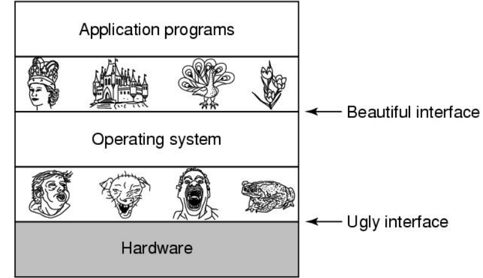
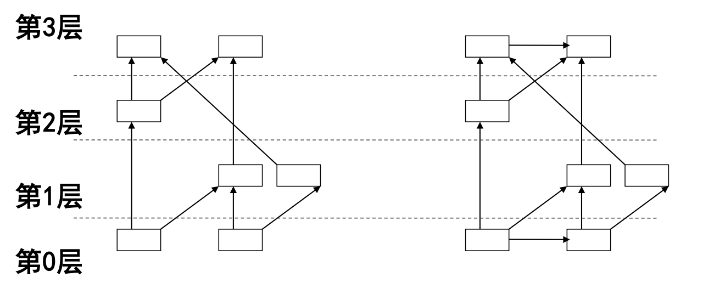

操作系统引论复习
操作系统定义
OS课程定义
操作系统是一组管理计算机硬件资源的软件集合，它向计算机程序提供共性的服务。
王道定义
操作系统是指控制和管理整个计算机系统的硬件与软件资源，合理的组织、调度计算机的工作与资源的分配，进而为用户和其他软件提供方便接口与环境的程序集合。
区别
最大的区别在于OS课程没有强调操作系统同时管理软件资源，软硬件资源合称计算机资源
操作系统定位
- 操作系统是计算机系统中最基本的系统软件，也就是它的本质仍为软件。
- 操作系统管理硬件、为上层提供统一接口从而方便使用、并提供保护（内核态）。

操作系统特征
并发，共享，虚拟，异步。
操作系统功能
计算机系统资源的管理者
- 处理机管理
- 存储器管理
- 设备管理
- 文件管理
- 作业控制
作为用户和计算机硬件系统之间的接口
操作系统历史
概览
批处理系统
单道批处理系统
定义
系统对作业的处理成批进行，但内存中只始终保持一道作业。
缺陷
在处理中，如果该作业需要进行IO操作，CPU会在IO期间等待而什么也不做，显然没有利用最大化
多道批处理系统
定义
多道程序设计技术的引入使得多道批处理可以实现，其允许多个程序同时进入内存并允许它们在CPU中交替运行，当某一程序因为IO操作暂停运行时，CPU不再空闲等待，而是引入另一个程序继续执行。将这些空闲时间利用了起来。
特点
多道，成批。
优点
资源利用率高，系统吞吐量大，CPU和其他资源保持忙碌状态
缺点
平均周转时间长，用户响应时间较长，没有人机交互能力，用户不能了解自己的程序的运行情况，又不能控制计算机。
分时系统
产生原因
- 需要人机交互
- 需要支持多用户，多进程
定义
将CPU处理时间分割为多个时间片，将时间片分给不同程序，达到多个程序“同时”运行的效果。
特征
同时性、交互性、独立性、及时性
实时操作系统
产生原因
有些场景下，有些需求需要快速被响应，过时则会带来严重后果。
分类
- 硬实时系统：某个动作必须绝对在规定的时刻完成
- 软实时系统：接受偶尔的违反时间规定，不造成永久性损害。
特点
及时性、可靠性
网络和分布式操作系统
网络操作系统
将网络中的各台计算机有机的结合起来，提供一种统一、经济而有效的使用各台计算机的方法、实现各台计算机间的数据的互相传送。
特点是：网路中资源的共享和计算机间的通信
分布式操作系统
多台计算机组成，互相通信、同等地位、资源共享、任意计算机都可组成可重构的子系统，最重要的是一个任务可以分布在多个计算机上共同完成工作。
特点是：分布性和并行性
操作系统实现
异常
区别于王道，我们课程认为异常可以包括中断，其分类如下：
异步异常
主要指的是中断，其随时可能发生，所以是异步的。
同步异常
是某一特定指令执行的结果。所以是同步的。
操作系统结构
模块接口
定义
模块接口是将操作系统按功能划分为若干具有一定独立性的模块。各模块之间通过规定好的接口进行通信
划分标准
- 内聚性：模块内部各部分间联系的紧密程度。内聚性越高，模块独立性越好
- 耦合度：模块间相互联系和相互影响的程度。耦合度越低，模块独立性越好
高内聚，低耦合优点
加速了操作系统的研制过程、增加了操作系统的灵活性、便于修改和维护。缺点
接口定义困难、无序性，这种无序导致测试起来很麻烦，只能整体测正确性。有序分层法
定义
将操作系统分成若干层（注意是操作系统），最底层为硬件，最高层为用户接口，每层只能调用紧邻它的低层的功能和服务。优点
- 便于系统测试，先测里面的，再套一层测这一层的正确性，一层一层套上去、
- 易于扩充和维护，加层数就好。
缺点
- 层间定义困难
- 运行效率低，通过的层数太多。
虚拟机结构
定义
虚拟机是一台逻辑计算机，利用特殊的虚拟化技术，隐藏特定计算平台的实际物理特性，为用户提供抽象的，统一的、模拟的计算环境。
优点
- 可以实现完全保护，安全性很高
- 用软件向硬件逐层扩展
- 把多道程序和扩充机器的功能完全分开，让两部分都变得简单灵活和易于维护
缺点
性能开销比较大
微内核结构
定义
将最基本的功能保留在内核，其余全部移到用户态执行，减少内核的负载和设计复杂性。
- 内核中只包括中断处理、进程通信（IPC）、基本调度等
- 文件系统、网络功能、内存管理、设备管理等作为服务在微内核上运行。
优点
- 内核易于实现，可移植性好、配置灵活、适应分布式环境
- 服务崩溃不会导致整个操作系统崩溃，重启服务就行。
缺点
速度较慢，切换比较多。
客户端-服务器模型
微内核采用的一种模型。